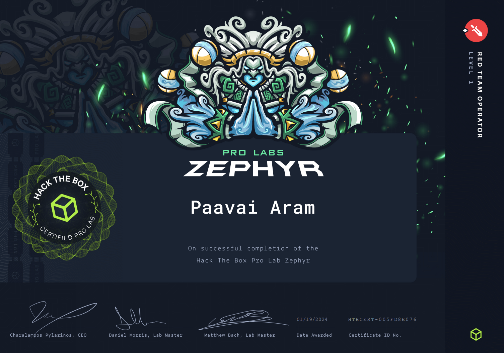

1. Introduction:
Firstly,a very special thanks to Brainspill3r for the 1 year Pro Labs subscription. I was so out of touch with red teaming as I was into blue teaming for past few months. I and HolyWater 🌊 decided to do the Pro labs during the Christmas🎄 vaccation and we completed it. Doing this Zephyr Pro labs brought me back to track and I enjoyed it a lot. I thought I could crack it in a week or so but it took more time. Solving Zephyr taught me a lot of new concepts, making it a great learning experience.
2. About the Lab:🧑💻
We are tasked to conduct a internal penetration test on a corporate network. There are totally 17 machines and 17 flags which we have to obtain. Initially I thought Zephyr was purely AD (Active Directory) but it indeed had some web portion as well.
3. Prerequisites required:🤓
Basic knowledge and understanding of :
Penetration testing tools
Windows and Linux operating systems
Windows Active Directory
Microsoft SQL servers
Web application exploitation skills
PowerShell
Pivoting knowledge, Proxychains, and Metasploit usage
BloodHound usage
Windows and Linux Privilege Escalation
I'm PNPT certified and hence I already knew the basic AD attacks but while doing zephyr I had to learn some a lot of new AD attacks.
4. My tips for the Lab: 😉
- This lab requires a lot of pivoting and ligolo-ng and comes in so handy in these siutations. I myself never used ligolo-ng previously before this lab but now after using it I highly recommend it for pivoting.
- There are multiple points where you have to learn a totally new concept so get ready to read like 10 blogs and try around 3+ tools for it.
- Sometimes the lab gets broken and its mainly because a lot of people are connected to it so if its broken try to switch your VPN server and try a different VPN server.
- Learning some concepts like delgation, cross domain trust exploitation and active directory certificate services before taking the labs can help you a lot but not mandatory. (I learnt it while doing the labs)
- A good understanding of various user integrity levels also is highly required.
- Knowledge of some basic AMSI bypass or AV bypass technique comes in handy.
- Tools like evil-winrm, xfreerdp , crackmapexec/netexec and psexec really help you a lot. If some tool doesn't run in a winrm session, try it in a rdp session.
- Also learn to enable RDP or SMB service using windows command prompt/powershell commands (you can generate these commands using chatGPT).
- Use tools like bloodhound and ldapdomaindump to enumerate the domain to the fullest. These both tools will help you a lot in this lab.
4. Learning Outcomes: 📖
AD Enumeration
Exploitation of a wide range of real-world Active Directory flaws
Lateral movement and crossing trust boundaries
Password Cracking
Privilege escalation
PowerShell
Web application, SQL, and relay attacks
BloodHound usage
Pivoting
4. Conclusion: 🔚
I highly recommend this lab to the people who have completed OSCP/PNPT or any similar level certification. Its a great start to learn beyond.